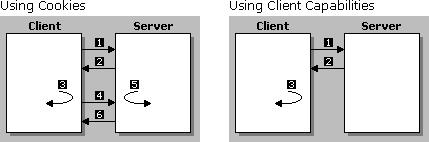

| ||
Web developers are constantly searching for ways to design and implement sites that deliver the best user experience possible. One way to enhance user experience is to customize content based on capabilities that the client browser supports. For example, when a client-side script detects a low-bandwidth modem connection to the server, it may choose to request low-resolution images from the server to minimize bandwidth consumption.
Client capabilities consists of information about the browsing environment, including screen resolution, screen dimensions, color depth, CPU, or connection speed. Microsoft® Internet Explorer 4.0 exposed client capabilities as properties through the Dynamic HTML (DHTML) Object Model. Internet Explorer 5 enhanced this further to include a means to install browser components on demand. Beginning with Internet Explorer 5, all this information has been encapsulated into a DHTML Behavior and will be made available as one of the browser's default behaviors.
By making this information available on the client, pages can be cached, server roundtrips minimized, server resources freed up as content generation shifts back to the client, and overall performance improved.
This article outlines the benefits introduced by a client-side solution and discusses the details involved in obtaining client capabilities information from the client. Realizing that a client-side solution is not suited for every Web site or Web application, a solution for server-side developers is provided as well.
Before the release of Internet Explorer 4.0, the only means of obtaining client capability information was through cookies. Microsoft® Internet Information Server (IIS) provided another mechanism through the Browser Capabilities component. However, there are inherent limitations to these two methods. By exposing client capabilities on the client side, Internet Explorer 4.0 provides a solution that attempts to overcome these limitations.
Using Cookies. The diagram below illustrates what occurs when the user types in the URL of a site that requires client capabilities.

| 1 The client sends a request to the server. | 1 The client sends a request to the server. |
| 2 The server sends back a script to obtain the information. | 2 The server sends the page, including a client-side script, to obtain the information. |
| 3 The client executes the script and stores the information in a cookie. | 3 The client executes the script and renders the page. |
| 4 The client sends the cookie back to the server. | |
| 5 The server processes the information in the cookie and generates a custom page. | |
| 6 The server sends the custom page back and the client renders it. |
The table below outlines the limitations to the server-side approach using cookies, and explains how these problems are addressed by a client-side solution using client capabilities.
| Server-side limitation | Client-side solution |
|---|---|
Every time new client capability information gets sent in a cookie as part of the client's request, the server spends precious cycles generating content for that client request. |
By providing client capabilities on the client side, no cookies have to be passed back and forth. All the processing takes place on the client computer; none takes place on the server. This gives the server more time to service other clients' requests. |
|
Because the server generates a custom page for every client request, the page cannot be cached. |
Client capabilities provides a way to shift the content generation process from the server back to the client. Because the server sends the same page for every client request for the same URL, the page is cached. Every subsequent client request for the same URL, therefore, can be serviced directly by the cache, rather than by an expensive roundtrip back to the server. |
In a multiuser environment where Internet requests are routed through a proxy server, the limitation is even more apparent. Consider the same scenario with 1,000 users. If every one ofthose users request the same page at least two times, the server will have to respond 2,000 times to service each of those requests, because the page uses cookies and therefore cannot be cached on the proxy. |
Because the client-side solution allows the page to be cached, the only time the proxy hits the server is the very first time a user requests the page. Every subsequent request for the same page can be serviced directly by the proxy's cache, instead of the server. Consider the same environment of 1,000 users. This means one request instead of 2,000 requests. This represents a significant reduction in the number of server hits and results in increased performance on both the client and the server. |
Using the Browser Capabilities Component. The server-side Browser Capabilities component in IIS provides information about the capabilities supported by the browser by comparing the user-agent HTTP Header with the entries in the Browscap.ini file. Server-side scripts are then able to deliver customized content based on this information. However, this approach poses limitations as well. The following table outlines how client capabilities works around these limitations.
| Server-side limitation | Client-side solution |
|---|---|
The component relies on a file called Browscap.ini, which contains a static list of client capabilities based on the version of the browser. Due to the static nature of this file, it has to be updated every time a new version of the browser becomes available. |
Exposing client capabilities on the browser works around this by making the same information available dynamically as part of the object model and accessible through script. |
The static list maintained in Browscap.ini fails to account for options that the client can turn on or off on demand, nor does it provide version-independent information, such as whether certain components currently are installed on the client's system. |
Among the types of information client capabilities provides are screen resolution, screen dimensions, available bandwidth, cookies or Java support, color depth, language, as well as what components are currently installed on the client. |
As highlighted in the previous section, the ideal way to obtain client capability information is from a client-side script. This method minimizes server roundtrips, frees up server resources, and, consequently, boosts performance.
Internet Explorer 4.0 introduced this type of information as a set of enhancements to the DHTML Object Model, making it easily accessible to client-side scripts. In most cases, this information has been exposed as properties of the navigator object, which contains information about the browser. In other cases, the information is available as properties of the screen object.
The following table outlines the client capabilities that have been exposed since Internet Explorer 4.0.
| Client capability | Description | Implementation |
|---|---|---|
| availHeight | Specifies the height of the working area of the system's screen, in pixels, excluding the taskbar. | window.screen.availHeight |
| availWidth | Specifies the width of the working area of the system's screen, in pixels, excluding the taskbar. | window.screen.availWidth |
| bufferDepth | Specifies the number of bits per pixel used for colors on the off-screen bitmap buffer. | window.screen.bufferDepth |
| colorDepth | Specifies the number of bits per pixel used for colors on the destination device or buffer. | window.screen.colorDepth |
| cookieEnabled | Specifies whether client-side cookies are enabled in the browser. | window.navigator.cookieEnabled |
| cpuClass | Specifies the type of CPU of the client computer. | window.navigator.cpuClass |
| height | Specifies the vertical resolution of the screen, in pixels. | window.screen.height |
| javaEnabled | Specifies whether the Microsoft virtual machine is enabled in the browser. | window.navigator.javaEnabled() |
| platform | Specifies the platform on which the browser is running. | window.navigator.platform |
| systemLanguage | Specifies the default language that the system is running. | window.navigator.systemLanguage |
| userLanguage | Indicates the current user language. | window.navigator.userLanguage |
| width | Specifies the horizontal resolution of the screen, in pixels. | window.screen.width |
The example below downloads the appropriate image based on the number of colors supported by the client screen. If it detects less than 256 colors (or 8 bits per pixel), it displays an image of 16 colors; otherwise, it displays a higher resolution image. As a result, the colors are more suited to the client screen, and overall user experience is improved.
<IMG ID="myImage" WIDTH=200 HEIGHT=200>
<SCRIPT>
{
if (window.screen.colorDepth >= 8)
myImage.src = "256color.bmp"
else
myImage.src = "16color.bmp";}
</SCRIPT>
Beginning with Internet Explorer 5, client capabilities information has been made available as one of the browser's default behaviors. Encapsulated in this behavior are all of the properties exposed in Internet Explorer 4.0, and in addition, a set of new properties and methods that enable Web applications to install browser components on demand. For a complete list of properties and methods included in the clientCaps behavior, refer to the clientCaps Behavior reference page.
The following sample demonstrates how to use the clientCaps behavior to obtain some of the available client capabilities information. For more information about behaviors and using behaviors on a page, refer to the links provided in the Related Topics.
Note This requires IIS 5.0, which was still a Beta release at the time of publication. Please refer to the Web Workshop site for the most current information.
Although the benefits are clear, a client-side solution might not be viable for every Web application. In some cases, a Web developer might be locked into a server-side solution, and the disadvantage of using cookies might be negligible. For those cases, Internet Explorer 5 and IIS 5.0 introduce a way to access client capability information from a server-side script, using a combination of cookies and the IIS Browser Capabilities component. Beginning with IIS 5.0, the Browser Capabilities component has been extended to include client capability information as properties of the component.
Because the information is available on the client, accessing the information from a server-side script requires a few more steps.
Here are the steps required to obtain client capability information from a server-side script.
Note how the property names and their corresponding values are constructed as an ampersand-delimited list of name=value pairs. Persisting information as name=value pairs is characteristic of cookies. (For more information, see the cookie property reference page.)
When specifying name=value pairs, the property names specified on the left side of the equal sign do not need to match the names of the actual property in the DHTML Object Model. This specified property name is then used in step 2c below when the property is accessed from the server-side script.
Sample Code
<HTML XMLNS:IE> <HEAD> <STYLE> IE\:clientCaps {behavior:url(#default#clientCaps)} </STYLE> <SCRIPT> function stopAllErrors() { // No errors should be presented to the user if they occur. return true; } window.onerror = stopAllErrors; function window.onload () { bcString = "width= " + oClientCaps.width; bcString += "&height=" + oClientCaps.height; bcString += "&availHeight=" + oClientCaps.availHeight; bcString += "&availWidth=" + oClientCaps.availWidth; bcString += "&bufferDepth=" + oClientCaps.bufferDepth; bcString += "&colorDepth=" + oClientCaps.colorDepth; bcString += "&cookies=" + oClientCaps.cookieEnabled; bcString += "&javaapplets=" + oClientCaps.javaEnabled; bcString += "&cpuClass=" + oClientCaps.cpuClass; bcString += "&platform=" + oClientCaps.platform; bcString += "&systemLanguage=" + oClientCaps.systemLanguage; bcString += "&userLanguage=" + oClientCaps.userLanguage; bcString += "&MSvm=" + oClientCaps.isComponentInstalled("08B0E5C0-4FCB-11CF-AAA5-00401C608500","ComponentID"); bcString += "&MediaPlayer=" + oClientCaps.isComponentInstalled("{22d6f312-b0f6-11d0-94ab-0080c74c7e95}", "ComponentID"); document.cookie = "BrowsCap=" + bcString; } </SCRIPT> </HEAD> <BODY> <IE:clientCaps ID="oClientCaps" /> </BODY> </HTML>
<!--METADATA TYPE="Cookie" NAME="BrowsCap" src="InsertNameHere.htm"-->
There are two ways to do this. One way is to insert this <OBJECT> tag into your page:
<OBJECT ID=myBrowsCap PROGID="MSWC.BrowserType" RUNAT="Server"></OBJECT>
Another way is to call the CreateObject method of the Server object in ASP, and assign it to the variable myBrowsCap.
<% Set myBrowsCap = Server.CreateObject("MSWC.BrowserType") %>
<%
Response.write("width= " +myBrowsCap.width + "<br>")
Response.write("height= " +myBrowsCap.height + "<br>")
Response.write("availHeight= " +myBrowsCap.availHeight + "<br>")
Response.write("availWidth= " +myBrowsCap.availWidth + "<br>")
Response.write("bufferDepth= " +myBrowsCap.bufferDepth + "<br>")
Response.write("colorDepth= " +myBrowsCap.colorDepth + "<br>")
Response.write("cookies= " +myBrowsCap.cookies + "<br>")
Response.write("javaapplets= " +myBrowsCap.javaapplets + "<br>")
Response.write("cpuClass= " +myBrowsCap.cpuClass + "<br>")
Response.write("platform= " +myBrowsCap.platform + "<br>")
Response.write("systemLanguage= "+myBrowsCap.systemLanguage + "<br>")
Response.write("userLanguage= " +myBrowsCap.userLanguage + "<br>")
%>
Did you find this topic useful? Suggestions for other topics? Write us!
© 1999 Microsoft Corporation. All rights reserved. Terms of use.